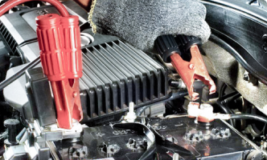

Restart — Ваша зона автокомфорту
Restart — Ваша зона автокомфорту

Акумулятори
Підібрати стартер та деталі стартера можна в інтернет-магазині
Підібрати генератор та деталі генератора можна в інтернет-магазині
Підібрати запчастини до системи кондиціонування можна в інтернет-магазині